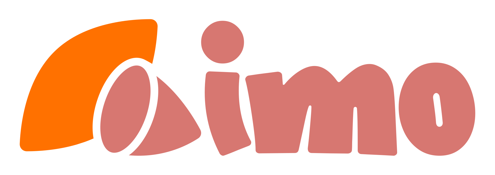

Keyboard shortcuts
ショートカット
Study modes
1
Dictionary
2
Cards
3
Quiz
4
Kana charts
Search
/
Jump to search
When you’re quizzing
Quiz tab
A
→
D
Pick answers
Enter
Check answer
→
Next question
n
Next question
(after you answer)
Flashcards
Enter
or
Space
Flip focused card

Today
0
This category
0/0
Total learned
0
Dictionary
Cards
Quiz
あ
Kana
Start drill!
Only unlearned
All words
Shuffled
Shuffle
Romaji on
Romaji off
Reset
Category progress
0 / 0
0%
行きましょう！